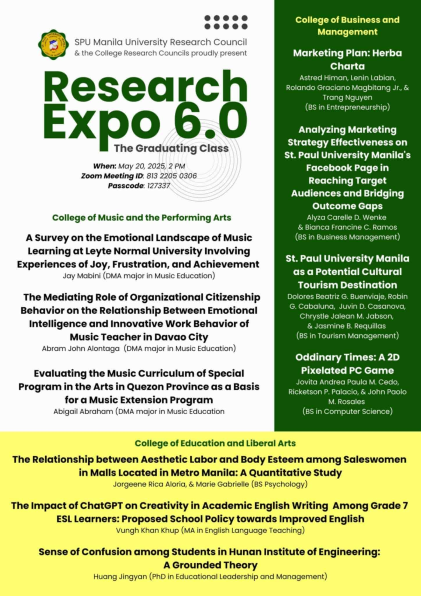
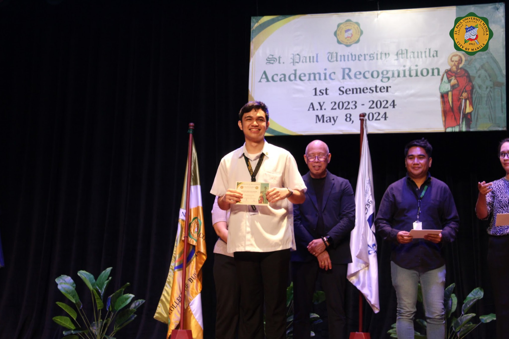
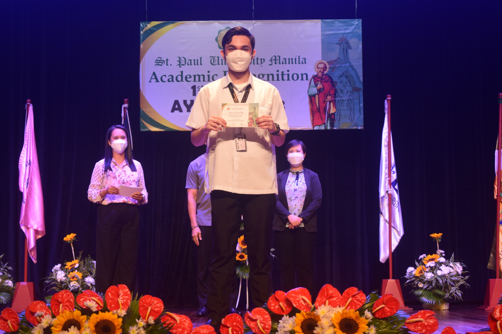
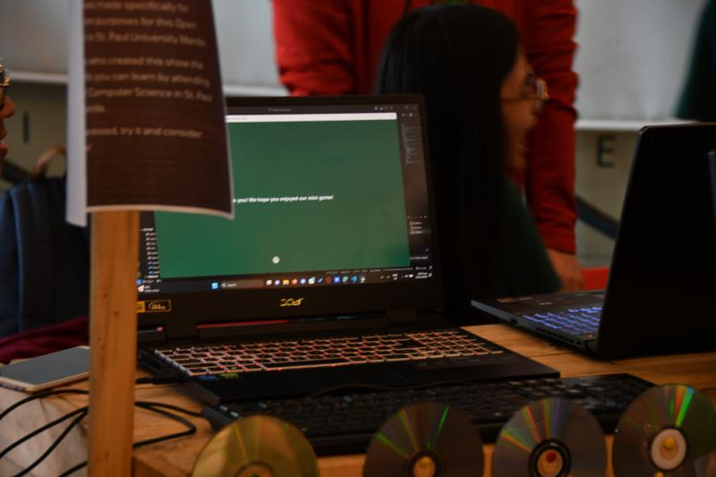
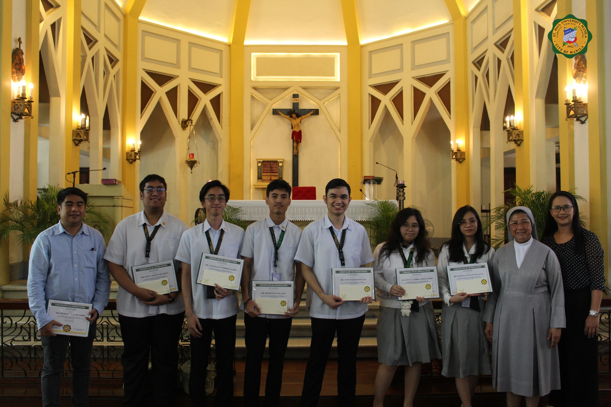
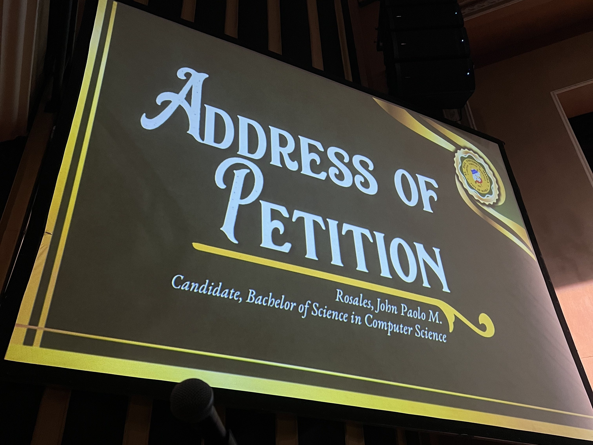
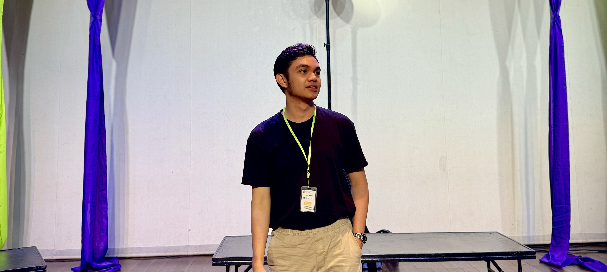

About Me
Hello! I’m John Paolo M. Rosales, a proud Computer Science Graduate from St. Paul University Manila. My journey blends technical expertise with real-world impact: I served as a Web Developer Intern at Rakso Computer Technologies Inc. (2025), Database Developer at St. Paul University Manila (2023–2024), and as an International Marketing Partner at SM Development Corporation (2021–2022).
My Mission
"To bridge the gap between complex technology and human needs, creating solutions that not only solve problems but prevent them, while fostering communities that grow together through shared knowledge and mutual support."
Navigating Success in Computer Science
A showcase of the outstanding journey in Computer Science
Graduated with Latin Honors in Computer Science
Graduated as Salutatorian with Magna Cum Laude honors from St. Paul University Manila, completing the Computer Science program with distinction. This achievement reflects a deep commitment to academic excellence and holistic growth. Served as a Paulinian Ambassador for one year, Co-Founder and Core Team Member of the Google Developer Student Clubs – SPU Manila, and held leadership roles for four consecutive years as an officer of the Junior Philippine Computer Society.
Featured Thesis – Annual Research Forum 2025
The game features a decision-based narrative system designed to immerse players in a dynamic storyline, enabling deeper information exchange and reflective interaction.Each decision influences subsequent stages, impacting the storyline and overall gameplay experience. Developed in Unity and C#, the project was officially featured in Research 6.0 at St. Paul University Manila’s Annual Research Forum on May 20, 2025.




All images featured are either sourced from the official pages or personally captured by John Rosales.
Why I Code
Harnessing technology to empower communities and create lasting change

Transforming Passion for Games into Purpose
Example: My thesis groupmates shared a deep love for gaming—so we asked, why not build something that could save lives? We created a 2D educational game centered on disaster preparedness, merging entertainment with real-world impact. It turned complex survival strategies into engaging, memorable experiences.
Result: Featured at the Annual Research Forum

Creating Solutions That Make Work Easier
Example: Our team was entrusted by the university to build a custom automation system that would enhance daily operations. Working closely with the Library and ICT offices, we developed a solution that simplified workflows, minimized manual tasks, and empowered staff to focus on what matters most.
Result: First Official Student-Built System Commissioned

Sharing What I Know, So Others Can Grow
Example: Through technical workshops and community mentorship, I’ve helped over 500 individuals—from students to staff—develop foundational skills in coding and technology. For me, coding is not just about creating software; it’s about creating opportunity.

Coding the Future I Want to See
I see technology as a tool to anticipate challenges and build solutions before they're needed.
With every project, I aim to strengthen communities and spark progress.
Coding isn’t just about solving problems—it’s about shaping possibilities.
All images featured are either sourced from the official pages or personally captured by John Rosales.
Leadership Philosophy
Guiding with purpose, empowering through action, and building legacies that uplift others
Empowering Through Service
Leadership starts with empathy and service. In every role—from tech lead to student ambassador—I remove roadblocks and open opportunities so others can thrive, grow, and lead with confidence.
Collaboration as Culture
I foster inclusive, purpose-driven teams where every voice contributes to the outcome. True innovation comes when ideas collide, and leadership means making space for that brilliance to surface.
Sustainable Systems
I build initiatives that outlast me. From automated systems to community programs workflows, I lead with a vision for sustainability—ensuring impact continues and evolves beyond my tenure with helping people in mind.
Core Values
Unshakable principles that shape every decision, define every line of code, and fuel every project
Integrity
I do what's right—especially when no one is watching. Integrity is the foundation of trust, and trust is the foundation of impact.
Excellence
I refuse to settle for “good enough.” I pursue excellence with precision, knowing that quality code and thoughtful design can change lives.
Community Impact
I believe real success means lifting others as you climb. Through mentorship, service, and outreach, I aim to create ripple effects of growth and opportunity.
Beyond the Code
Interests that spark creativity, strengthen leadership, and inspire purpose
Lifelong Learning
Fueling my curiosity through books on emerging tech, leadership, business strategy, and even light novels for balance and inspiration.
Cultural Exploration
Traveling to immerse in diverse cultures, broaden my worldview, and draw fresh perspectives that influence how I design, lead, and connect.
Community Building
Leading workshops and study circles that empower aspiring developers and create inclusive spaces for growth and collaboration.
Tech-Driven Innovation
Exploring breakthroughs in AI, machine learning, and emerging tech to develop solutions that create real-world impact and community value.
Get to Know Me Better
Download my comprehensive Curriculum Vitae for media use, speaking engagements, or collaboration opportunities.